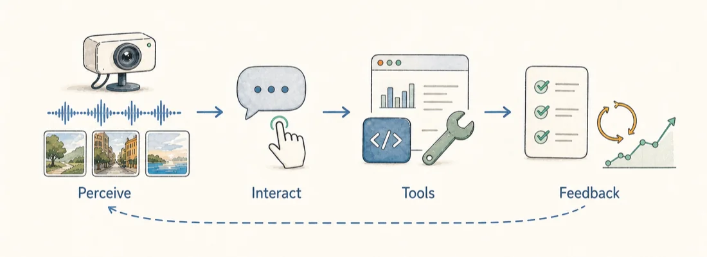

Hi! I'm Panwang Pan, a senior researcher at ByteDance Seed. I work on multimodal agents for real-time perception, interaction, tool use, and feedback-driven improvement.
My through-line is RSI for real-world agents: perceive continuously, interact with people and tools, observe outcomes, and use feedback to refine behavior. I am especially interested in:

(i) Interactive multimodal agents: real-time audio-visual assistants (SeedRealtime), interactive and proactive MLLM evaluation (Interactive & Proactive Agent), human-like SAM agents for reasoning segmentation (SAM-Veteran), and intelligent photo-retouching tool use (JarvisArt).
I previously worked at Alibaba Cloud and interned at NVIDIA. I maintain open-source agent systems via PaulClawX and review for major ML/CV conferences. Always open to discussion and collaboration. Email: paulpanwang@gmail.com; WeChat ID: PaulClaw.
An industrial real-time assistant that watches, listens, speaks, and responds in context, anchoring for agents that stay present in live environments instead of only answering turn-by-turn prompts.
IPI-Agent is training-free: interaction-control policy and temporal gating make existing offline MLLMs more stable, stateful, and timely in streaming assistance.
An MLLM-based SAM agent that performs reasoning segmentation in a human-like workflow: it proposes boxes, refines masks with interaction points, and terminates adaptively through CoT-guided tool use.
An MLLM-driven photo retouching agent that understands user intent, follows CoT-style artistic reasoning, and coordinates 200+ Lightroom tools through an Agent-to-Lightroom protocol to improve image quality with fine-grained global and local control.
I build RSI systems where agents perceive continuously, interact with people, software, and devices, observe outcomes, and use feedback to improve future behavior.
World models provide the environment layer for capable agents: dynamic scenes, long-horizon memory, identity-consistent generation, and evaluation loops that connect simulated behavior to real-world action.